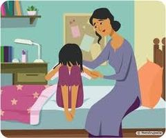
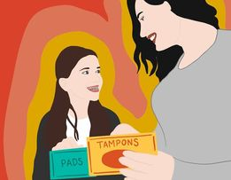
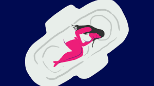
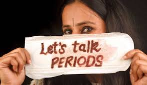
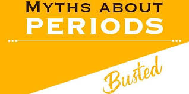
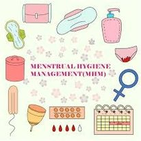
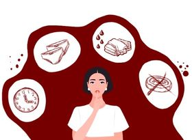

It is the voice of millions of girls out there who want to speak openly about menstruation but are
imprisoned
by the stigmas, myths and taboos that stems menstruation.
With the propulsion of this project we aim to break the silence and the inhumane practices of period
shaming
and to create awareness about menstrual hygiene among the adolescent girls especially in rural areas.
So let's come together and make a big noise about how intolerant the current status quo is and talk
about
periods -
"the only blood shed without violence!"
With profound zeal and enthusiasm National Service Scheme of Shaheed Bhagat Singh Evening College,
University
of Delhi is ready to break the silence and create a revolution on one of the most delicate yet
imperative
topic-Menstruation hygiene and periods under the
Project Laali:- शर्म नहीं,सुरक्षा !.
The common perception prevalent in society regarding topic is very conservative and Orthodox. Various
futile
myths and stereotype has already overpowered on one's human behaviour and attitude leading to women
subjugation
and prohibition from mainstream!!
With the help of this campaign we aim to develop a sense of togetherness and acceptance of women in
society
irrespective of their condition and changing lifestyle and hence to establish equality and aware
society!!
PROJECT LAALI was launched 2nd April, the first day of Navratri.It is thereby requested to every
civilians to
support us in such a massive revolutionary project and help us in spreading words for the better
tomorrow.
Regards
NSS
Shaheed Bhagat Singh Evening College
(University of Delhi)
GLIMPSES OF CAMPAIGN
First Period

What causes menstruation?
Menstruation is a result of puberty. This is when your body becomes capable of reproduction.
• When your menstrual cycle begins, your estrogen levels increase. That causes the lining of your uterus to thicken
• The uterine lining thickens so it can support a fertilized egg and develop into a pregnancy.
• If there isn’t a fertilized egg, your body will break the lining down and push it out of your uterus. This results in bleeding — your menstrual period
• It doesn’t matter if you’ve had a period for years or you’re waiting for your first one — periods can be difficult to navigate
• This article will go over everything you need to know, from how to find the right menstrual products and dealing with cramps to saving stained clothes
When will I get my first period?
Most people start their periods between the ages of 12 and 13.Trusted Source However, it’s normal to start your period a little earlier or later, too.
As a general rule of thumb, menstruation will start about two years after your breasts begin to develop.
What signs should I look for?
people start their periods without any warning. Others may experience premenstrual syndrome (PMS) in the days leading up to their period.
Symptoms of PMS include:
• acne
• abdominal bloating
• soreness in your breasts
• back pain
• constipation
• diarrhoea
• feeling more tired than usual (fatigue)
You may find it helpful to carry a “period kit” in your bag so you’re not caught completely off guard when your period begins.
This may include a clean pair of underwear,
pad or tampon,
wipe,
pain reliever, such as acetaminophen (Tylenol).
My period just started — what should I do?
If you’ve started your period and don’t have something to use for the blood, try not to worry. You can fashion a temporary pad out of toilet paper to hold things over until you’re able to get a proper pad or tampon.
Here’s how:
1. Take a long section (at least 10 squares) of toilet paper and fold the layers over each other.
2. Place this where a pad would go — along the panel of fabric between your legs (called the gusset) that’s in the middle section of your underwear.
3. Take another length of toilet paper and wrap it around the “pad” and your underwear a few times. This will help hold the tissue in place.
4. Tuck the end of the tissue into the top of the finished wrap. You now have a makeshift pad.
If you’re at school, you may consider asking your teacher or nurse for a pad or tampon. They’ve been asked before — trust us.
How long will it last?
Your first period may only last a couple of days.
It may take a couple of months for your period to settle into a regular schedule and consistency.

What can I use to stop the bleeding?
Once it does, your period may last anywhere from two to seven days each month.
Your period is a part of your menstrual cycle. This means that, with time, your period will usually be on a predictable pattern.
The average menstrual cycle is about 28 days. Some people have one that lasts 21 to 45 days. That’s completely normal, too.
It may take up to 6 years after your first period for menstruation to occur at a regular interval.That’s because your body has to learn how to release and regulate your reproductive hormones.
Will I have periods forever?
You won’t have a period for the rest of your life, but you’ll probably have it for quite some time.
Most people will have a menstrual period until they go through menopause. Menopause occurs when the hormones that increased to trigger your first period begin to decrease.
Menopause typically begins between ages 45 to 55
MYTHS


Menstruation is a phenomenon unique to girls. However, it has always been surrounded by taboos and myths that exclude women from many aspects of socio-cultural life. In India, the topic has been a taboo until date. Such taboos about menstruation present in many societies impact on girls’ and women's emotional state, mentality and lifestyle and most importantly, health. The challenge, of addressing the socio-cultural taboos and beliefs in menstruation, is further compounded by the low girls’ knowledge levels and understandings of puberty, menstruation, and reproductive health. Thus, there is the need to follow a strategic approach in combating these issues. The current paper aims to discuss menstruation related myths prevalent in India, their impact on women's life, relevance of addressing these issues in primary care and a brief description about various strategies to combat them.
Menstruation Myth1:
This myth exists in parts of the world ranging from Bali and India to Nepal. Women are believed to be “unclean” while menstruating and are thus not allowed to enter “clean” and holy places like temples. This is a form of gender inequality that limits women from the same human rights like freedom to practice religion that men have access to. Girls and women menstruating are not unclean. They are normal, natural, and healthy. The myth that women cannot enter temples and holy ground is culturally controversial, and a sensitive issue. When women are treated differently because of a naturally occurring body cycle it creates shame, taboos, and humiliation towards periods that is deeply embedded into society. And that is the only thing that’s ridiculous
Menstruation Myth2:
“You’re supposed to get your period at least by the time you’re ”
There is no set age at which young girls should get their first period. Girls as young as nine years of age may start menstruating while some may start at the age of 15. If by the age of 15, a girl doesn’t get her periods, it is better to consult a doctor.
This particular myth plagues young women, girls and mothers alike. Sadly, if the girl misses her mark, i.e. if she turns 13 years and even one week old, and if she hasn’t started her period still, there is a problem with her!
Menstruation Myth3:
“Your period lasts for exactly one week.”
Shockingly, not all women’s bodies are the same, so women’s menstrual cycles also differ. The 28 days cycle is an average marker and not set in stone. No one is perfect and therefore; the menstruation cycle is also not accurate. Women have irregular periods for various reasons. Teenagers too, do not have the typical cycle of 28 days. The gap between periods may vary from 21 days to 35 days.
Menstruation Myth4:
“Eating sour foods will worsen menstrual cramps.”
Seriously… there is no connection between menstrual cramps and eating sour foods. However, it is essential for women to maintain a healthier diet during this period. It is best to eat beans, pulses, roti, brown bread, and yogurt.
Menstruation Myth5:
“You shouldn’t wash your hair during your period.”
Thank goodness this is a myth! There is no reason to follow this idea as bathing and regular grooming rituals have no connection with one’s menses. Taking warm baths twice a day will only help feel lighter as they ease muscle cramps
Menstruation Myth6:
In India and parts of Nepal (in alignment with the chaupadi tradition in Nepal). Myth number eight says that women cannot interact with or touch men because men will become sick by touching an “unclean” woman. Some 20% of girls in rural India believe they should not talk to a male member of the family during menstruation.
And 40% of girls in India learn about menstruation from their mothers. So, if external education is not provided these traditions will persist.
Menstruation Myth7:
70 percent of women still use old rags to soak the flow
Only 12% of India's 355 million menstruating women use sanitary napkins (SNs). Over 88% of women resort to shocking alternatives like unsanitised cloth, ashes and husk sand. Around 23% of these girls actually drop out of school after they started menstruating. The biggest barrier to using a sanitary napkin is affordability. These are the findings of the latest study, "Sanitary Protection: Every Woman's Health Right”.
Menstruation Myth8:
Buying Sanitary Napkins is embarrassing
It is not just the women but even men find buying sanitary napkins for their women embarrassing! Seventy five percent women in India buy sanitary napkins wrapped in a brown bag or newspaper, because of the shame associated with menstruation. They also never ask a male member of the family to buy sanitary towels or tampons
Strategies to Combat Menstruation Related Myths
Based on the available evidence, it is pertinent to follow a strategic approach for combating the myths and social taboos associated with menstruation in order to improve the reproductive health of adolescent girls and women. The first and foremost strategy in this regard is raising the awareness among the adolescent girls related to menstrual health and hygiene. Young girls often grow up with limited knowledge of menstruation because their mothers and other women shy away from discussing the issues with them. Adult women may themselves not be aware of the biological facts or good hygienic practices, instead passing on cultural taboos and restrictions to be observed.[1] Community based health education campaigns could prove worthwhile in achieving this task. There is also need to spread awareness among the school teachers regarding menstruation

What is Menstrual Hygiene?
Menstrual Hygiene Management (MHM) is defined as:
“Women and adolescent girls are using clean menstrual management materials to absorb or
collect blood that can be changed in privacy as often as necessary for the duration of the menstruation
period, using soap and water for washing the body as required, and having access to facilities to dispose of
used menstrual management materials"
Most of us go through our periods very secretively and don't really bother to figure out if our practices
are hygienic or not. At times, we may wear the same napkin for a whole day. Women is villages and smaller
towns still use reusable unhygienic cloth during their periods. And since periods are considered unclean,
they are not even allowed to use detergent for washing the soiled cloth well in some households.
Here are some tips to maintain hygiene during your periods, some of which you may not know about:
1. Choose your method of sanitation:
Today there are a number of ways including the use of sanitary napkins, tampons and menstrual cups to stay
clean. In India, most unmarried girls prefer to use sanitary napkins. If you do decide to use a tampon
remember that it is essential to choose one that has the lowest absorbency rate for your flow. While there
are some women who choose to use either different types of sanitary napkins on different days of their
periods or different methods of protection (like a tampon and a sanitary napkin), there are some who prefer
to stick to one type and brand. The best tip here is to try and use one brand for one type of protection for
a while to know if it helps your needs. Frequent switching between brands can make you uncomfortable since
brands are as unique as you, they suit everyone differently.
2. Change regularly:
Menstrual blood - once it has left the body - gets contaminated with the body's innate organisms. This rule
applies for even those days when you don t have much bleeding, since your pad is still damp and will have
organisms from your vagina, sweat from your genitals, etc. When these organisms remain in a warm and moist
place for a long time they tend to multiply and can lead to conditions like urinary tract infection, vaginal
infections and skin rashes.
The standard time to change a sanitary pad is once every six hours, while for a tampon is once every two
hours. That being said, you have to customize the changing schedule to your needs. While some women might
have a heavy flow and would need to change more often, others will need to change less frequently. There are
a few instances where your sanitary napkin or tampon might not be completely used usually on days when you
have a lesser flow but you must change at regular intervals.
In the case of tampons it is very important because, if left inserted into the vagina for long periods of
time it can cause a condition called TSS or toxic shock syndrome a condition where bacteria infiltrate the
body leading to severe infection that can send to the body into shock that requires emergent treatment and
can lead to serious complications and even death.
3. Wash yourself regularly:
When you menstruate, the blood tends to enter tiny spaces like the skin between your labia or crust around
the opening of the vagina and you should always wash this excess blood away. This practice also tends to
beat bad odour from the vaginal region. So, it is important to wash your vagina and labia (the projecting
part of female genitals) well before you change into a new pad. If you cannot wash yourself before you
change make sure to wipe off the areas using toilet paper or tissue.

4. Don t use soaps or vaginal hygiene products:
The vagina has its own cleaning mechanism that works in a very fine balance of good and bad bacteria. Washing
it with soap can kill the good bacteria making way for infections. So, while it is important to wash
yourself regularly during this time, all you need to use is some warm water. You can use soap on the
external parts but do not use it inside your vagina or vulva.
5. Use the right washing technique:
Always wash or clean the area in a motion that is from the vagina to the anus. Never wash in the opposite
direction. Washing in the opposite direction can cause bacteria from the anus to lodge in the vagina and
urethral opening, leading to infections. Read about urinary tract infections.
6. Discard your used sanitary product properly:
It is essential to discard your used napkins or tampons properly because they are capable of spreading
infections, will smell very foul. Wrapping it well before discarding it ensures that the smell and infection
is contained. It is advised not to flush the pad or tampon down the toilet since they are capable of forming
a block and can cause the toilet to back up. More importantly it is imperative that you wash your hands well
after you discard your used napkin since you are likely to touch the used portion of the pad or tampon while
discarding it.
7. Beware of a pad rash:
A pad rash is something that you might experience during a period of heavy flow. It usually occurs when the
pad has been wet for a long time and rubs along the thighs causing it to chaff. To prevent this from
occurring, try to stay dry during your periods. If you do have a rash, change your pads regularly and stay
dry. Apply an antiseptic ointment, after a bath and before bed this will heal the rash and prevent further
chaffing. If it gets worse do visit your doctor who will be able to prescribe you a medicated powder that
can keep the area dry.
8. Have a bath regularly:
To some it may seem like the most inane advice, but in some cultures it is believed that a woman should not
bathe during her periods. This myth was based on the fact that in the olden days women had to bathe in the
open or in common water bodies like a river or lake. But with indoor plumbing having a bath is the best
thing you can do for your body during your periods. Bathing not only cleanses your body but also gives you a
chance to clean your private parts well. It also helps relieve menstrual cramps, backaches, helps improve
your mood and makes you feel less bloated. To get some relief from backaches and menstrual cramps, just
stand under a shower of warm water that is targeted towards your back or abdomen. You will feel much better
at the end of it.
9. Be ready with on-the-go stuff during your periods
When you have your periods it is important to be ready. It is important to have extra sanitary pads or
tampons properly stored in a clean pouch or paper bag, a soft towel, some paper tissues or towels, hand
sanitizer, a healthy snack, bottle of drinking water, a tube of antiseptic medication (if you are using
one).
Period tracking apps:
1. clue 2. eve 3. ovia fertility 4. spot on
About Us
NSS UNION 2021-22 launched a project on menstrual hygiene to counter female's problem related to periods and personal health
We, at NSS SBSEC, work as a unit and not just as a club or a society. We work strictly in the spirit of our motto ‘Not Me, But You’ with the belief that service before self is of utmost importance. Being a government scheme, NSS provides members greatest exposure on a national level through its enriching camps and engaging activities. NSS teaches harmony, peace, and love; most importantly, it inculcates that social work and social responsibility are an integral part of one’s life.
PRINCIPAL :- PROF. S. K. SINHA
PROGRAM OFFICER :- PROF. S. K. BANDOONI
STUDENT COORDINATORS :- 1. DR. KIRAN JATAV
2. DR. JUHI PRIYANKA HORO